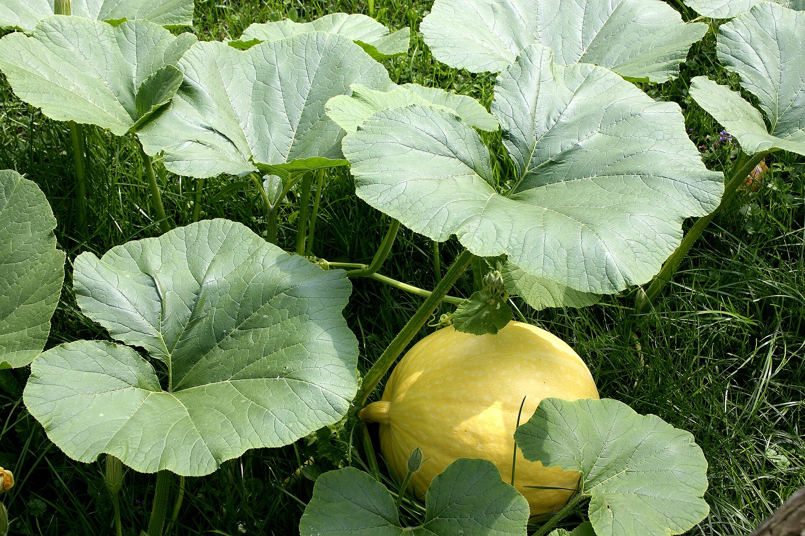

Árvores e Frutíferas
Abóbora-moranga
Cucurbita maxima
Moranga é um grupo de abóboras associado principalmente à espécie Cucurbita maxima. A planta é uma trepadeira rasteira ou apoiada em estruturas, com folhas largas e frutos de formatos e cores variados. A foto mostra uma abóbora da espécie C. maxima como referência; não identifica uma cultivar específica do hotel.
- Espécie de referência
- Cucurbita maxima
- Tipo de planta
- Trepadeira herbácea
- Destaque
- Fruto maduro de casca resistente